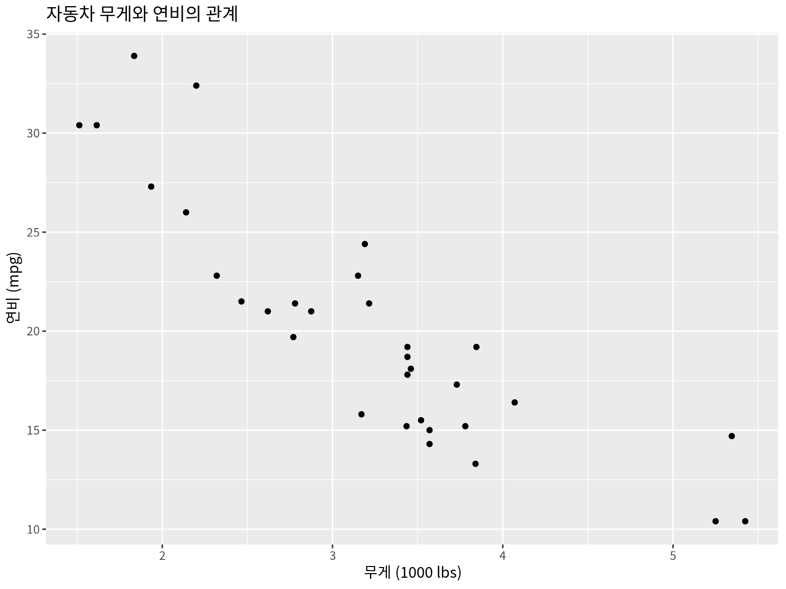
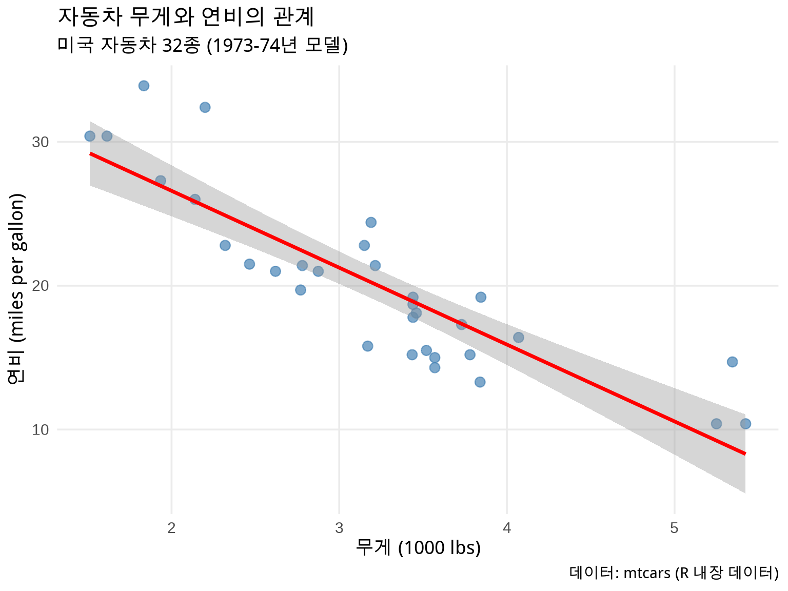

# R Console에서 실행
R.version.string2 R과 ggplot2 시작하기
3 R과 ggplot2 시작하기
🎯 학습 목표
이 챕터를 마치면 다음을 할 수 있습니다:
- R과 RStudio 환경을 설정하고 프로젝트 구조 생성
- 필요한 패키지 설치 및 실습 데이터 준비
- ggplot2의 기본 개념과 철학 이해
- 첫 번째 ggplot2 그래프 생성
- tidyverse와 here 패키지 활용
📚 교재 GitHub 저장소
저장소: https://github.com/jinhaslab/rvis
실습 스크립트: - code/setup.R - 패키지 설치 - code/data-simulation.R - 데이터 생성
온라인 책: https://jinhaslab.github.io/rvis/
문의: jinhaslab@gmail.com
3.1 1.1 왜 R인가?
3.1.1 1.1.1 보건학 연구에서 R의 위치
R은 통계 분석과 데이터 시각화를 위한 프로그래밍 언어이자 환경입니다. 1993년 뉴질랜드 오클랜드 대학의 Ross Ihaka와 Robert Gentleman에 의해 개발되었으며, 현재는 세계적으로 가장 널리 사용되는 통계 소프트웨어 중 하나입니다.
특히 보건학, 역학, 생물통계 분야에서 R이 널리 사용되는 이유:
R의 장점:
- 무료 & 오픈소스: 누구나 무료로 사용 가능하며, 학생부터 연구자까지 제한 없이 접근
- 재현 가능한 연구 (Reproducible Research): 코드로 모든 분석 과정을 기록하여 투명성 확보
-
풍부한 패키지 생태계: CRAN에 20,000개 이상의 전문 패키지 제공
- 역학:
epiR,incidence2,surveil,EpiEstim - 생존분석:
survival,survminer,ggsurvfit - 메타분석:
metafor,meta,rmeta - 공간역학:
sf,tmap,spdep
- 역학:
- 강력한 시각화: ggplot2를 통한 Nature, Science 수준의 출판 품질 그래프
- 활발한 커뮤니티: Stack Overflow, R-bloggers, Twitter #rstats 등
- 학술 출판 표준: 주요 역학 및 보건학 저널에서 R 사용 권장
- 통합 환경: 데이터 정제 → 분석 → 시각화 → 보고서 작성을 한 곳에서
💡 실제 사례: COVID-19 판데믹과 R
COVID-19 팬데믹 동안 전 세계 역학자들이 R을 활용하여:
-
Imperial College London: 전파 모델링 (
EpiEstim패키지) - Johns Hopkins University: 실시간 대시보드 (R Shiny)
- WHO: 주간 역학 보고서 생성 (R Markdown)
- CDC: 변이 바이러스 추적 및 시각화
R은 신속한 데이터 분석과 재현 가능한 보고서 작성에 결정적 역할을 했습니다.
3.1.2 1.1.2 R vs. 다른 통계 소프트웨어
| 특징 | R | SPSS | SAS | Stata | Python |
|---|---|---|---|---|---|
| 비용 | 무료 | 유료 (수백만원) | 유료 (수천만원) | 유료 (수백만원) | 무료 |
| 시각화 | ⭐⭐⭐⭐⭐ | ⭐⭐ | ⭐⭐ | ⭐⭐⭐ | ⭐⭐⭐⭐ |
| 재현성 | ⭐⭐⭐⭐⭐ | ⭐⭐ | ⭐⭐⭐ | ⭐⭐⭐⭐ | ⭐⭐⭐⭐⭐ |
| 통계 패키지 | ⭐⭐⭐⭐⭐ | ⭐⭐⭐ | ⭐⭐⭐⭐ | ⭐⭐⭐⭐ | ⭐⭐⭐ |
| 학습 곡선 | 중간 | 쉬움 | 어려움 | 중간 | 중간 |
| 역학 패키지 | 풍부 | 제한적 | 중간 | 풍부 | 중간 |
| 커뮤니티 | 매우 활발 | 활발 | 전문가 중심 | 활발 | 매우 활발 |
각 소프트웨어의 특징:
- R: 학술 연구와 출판에 최적화. ggplot2의 강력한 시각화. 무료.
- SPSS: GUI 기반으로 초보자에게 친화적. 클릭 방식. 재현성 낮음.
- SAS: 제약/금융 산업 표준. 안정적이나 고가. 레거시 코드 많음.
- Stata: 경제학/역학에서 전통적으로 사용. 명령어 기반. 깔끔한 출력.
- Python: 범용 프로그래밍 언어. 머신러닝 강점. 통계는 R보다 약함.
💡 보건학 연구자를 위한 권장사항
R을 선택하세요: - 역학 연구 (생존분석, 메타분석, 시계열) - 학술지 출판용 고품질 그래프 필요 - 재현 가능한 연구 수행 - 오픈소스 도구 선호
Python을 선택하세요: - 머신러닝/딥러닝 중심 연구 - 대규모 데이터 처리 (빅데이터) - 웹 크롤링, API 연동 필요
실무 팁: 많은 연구자들이 R (분석/시각화) + Python (데이터 수집/전처리)을 함께 사용합니다.
3.2 1.2 개발 환경 설정
3.2.1 1.2.1 R 설치
최소 R 4.3.0 이상이 필요합니다. (2025년 1월 기준 최신 버전: R 4.4.x)
다운로드:
-
Windows: https://cran.r-project.org/bin/windows/base/
- “Download R-4.x.x for Windows” 클릭
-
.exe파일 다운로드 후 실행 - 기본 설정으로 설치 진행
-
macOS: https://cran.r-project.org/bin/macosx/
- Intel Mac:
R-4.x.x-x86_64.pkg - Apple Silicon (M1/M2):
R-4.x.x-arm64.pkg -
.pkg파일 다운로드 후 설치
- Intel Mac:
-
Linux (Ubuntu/Debian):
# 최신 R 설치 (CRAN 저장소 추가) sudo apt update -qq sudo apt install --no-install-recommends software-properties-common dirmngr wget -qO- https://cloud.r-project.org/bin/linux/ubuntu/marutter_pubkey.asc | sudo tee -a /etc/apt/trusted.gpg.d/cran_ubuntu_key.asc sudo add-apt-repository "deb https://cloud.r-project.org/bin/linux/ubuntu $(lsb_release -cs)-cran40/" sudo apt install r-base r-base-dev
설치 확인:
⚠️ 주의사항
-
Windows 사용자: 설치 경로에 한글이나 공백이 없어야 합니다
- ✅ 좋은 예:
C:/Program Files/R/R-4.4.2 - ❌ 나쁜 예:
C:/내 문서/프로그램/R
- ✅ 좋은 예:
-
macOS 사용자: XQuartz 설치 권장 (일부 그래픽 패키지에 필요)
- 다운로드: https://www.xquartz.org/
-
Linux 사용자: 개발 도구 설치 필수
sudo apt install build-essential libcurl4-openssl-dev libssl-dev libxml2-dev
3.2.2 1.2.2 RStudio 설치
RStudio는 R을 위한 통합 개발 환경(IDE)입니다. R만 설치해도 작업이 가능하지만, RStudio를 사용하면 훨씬 편리하게 작업할 수 있습니다.
다운로드: https://posit.co/download/rstudio-desktop/ (무료)
권장 버전: RStudio 2023.06.0 이상
💡 R vs. RStudio
- R: 계산 엔진 (자동차의 엔진)
- RStudio: 개발 환경 (자동차의 운전석과 계기판)
R을 먼저 설치한 후 RStudio를 설치해야 합니다!
RStudio 인터페이스 (4개 패널):
┌──────────────────┬──────────────────┐
│ Source Editor │ Environment │
│ (스크립트 작성) │ (변수 목록) │
│ │ │
├──────────────────┼──────────────────┤
│ Console │ Plots/Help │
│ (코드 실행) │ (그래프/도움말) │
└──────────────────┴──────────────────┘-
Source Editor (왼쪽 위):
- R 스크립트 (.R) 및 마크다운 (.Rmd, .qmd) 파일 작성
- 코드 자동 완성, 구문 강조 지원
- 실행 단축키: Ctrl+Enter (Windows/Linux), Cmd+Enter (Mac)
-
Console (왼쪽 아래):
- 코드 실행 결과가 즉시 표시
- 대화형으로 R 명령어 입력 가능
- 오류 메시지도 여기 표시
-
Environment (오른쪽 위):
- 현재 메모리에 로드된 변수/데이터 목록
- History 탭: 실행했던 명령어 기록
- Connections 탭: 데이터베이스 연결
-
Plots/Help (오른쪽 아래):
- Plots: 생성한 그래프 표시 및 저장
-
Help: 함수 도움말 (
?function_name) - Files: 파일 탐색기
- Packages: 설치된 패키지 관리
🎨 RStudio 추천 설정
Tools → Global Options에서 다음 설정을 변경하세요:
- General → Save workspace: “Never” 선택 (재현성 향상)
- Code → Saving: UTF-8 인코딩 확인 (한글 깨짐 방지)
- Code → Display: “Rainbow parentheses” 활성화 (괄호 색상 구분)
- Appearance: 원하는 테마 선택 (Dark mode 권장: Tomorrow Night)
이러한 설정은 작업 효율과 코드 가독성을 크게 향상시킵니다.
3.2.3 1.2.3 프로젝트 폴더 구조 만들기
📂 프로젝트 폴더 구조
실습을 위해 다음과 같은 폴더 구조를 만들어주세요:
rvis-practice/ # 프로젝트 루트 폴더
├── rvis-practice.Rproj # RStudio 프로젝트 파일
├── code/ # R 스크립트
│ ├── setup.R # 패키지 설치 스크립트
│ └── data-simulation.R # 데이터 생성 스크립트
└── data/ # 데이터 저장
└── processed/ # 처리된 데이터Step 1: RStudio에서 새 프로젝트 생성
- RStudio 열기
- File → New Project → New Directory → New Project
- 폴더 이름:
rvis-practice - Create Project 클릭
Step 2: 필요한 폴더 생성 (매우 중요!)
Warning
스크립트 다운로드 전에 반드시 폴더를 먼저 만들어야 합니다!
# R Console에서 실행
dir.create("code")
dir.create("data")
dir.create("data/processed")
# 폴더 구조 확인
list.files()3.2.4 1.2.4 실습 스크립트 다운로드
💾 스크립트 다운로드 (2가지 방법)
방법 1: GitHub에서 직접 다운로드 (추천)
- GitHub 저장소 접속
-
code 폴더 →
setup.R클릭 - Raw 버튼 클릭 → 우클릭 “다른 이름으로 저장”
- 프로젝트의
code/폴더에 저장 -
data-simulation.R도 동일하게 저장
직접 링크: - setup.R - data-simulation.R
방법 2: R에서 자동 다운로드 (폴더 자동 생성)
⚠️ Step 2를 건너뛰었다면 이 방법을 사용하세요. 폴더가 자동으로 생성됩니다.
# 작업 디렉토리 확인
getwd() # rvis-practice 폴더여야 함
# 폴더가 없으면 먼저 생성 (중요!)
if (!dir.exists("code")) dir.create("code")
if (!dir.exists("data")) dir.create("data")
if (!dir.exists("data/processed")) dir.create("data/processed")
# setup.R 다운로드
download.file(
url = "https://raw.githubusercontent.com/jinhaslab/rvis/main/code/setup.R",
destfile = "code/setup.R"
)
# data-simulation.R 다운로드
download.file(
url = "https://raw.githubusercontent.com/jinhaslab/rvis/main/code/data-simulation.R",
destfile = "code/data-simulation.R"
)
# 다운로드 확인
list.files("code")✅ 2개 파일 (“data-simulation.R”, “setup.R”)이 보이면 성공!
3.2.5 1.2.5 패키지 설치 (10-20분 소요)
⏱️ 시간 소요 안내
패키지 설치는 최초 1회만 10-20분 정도 걸립니다. 한 번 설치하면 다음부터는 library()로 빠르게 로드할 수 있습니다.
# 프로젝트 루트에서 실행
source("code/setup.R")설치되는 패키지 목록 (40개 이상):
| 분야 | 패키지 |
|---|---|
| 핵심 | tidyverse, ggplot2, dplyr, tidyr, here, conflicted |
| 시각화 | patchwork, ggrepel, ggpubr, scales, RColorBrewer |
| 역학 | incidence2, surveil, outbreaks |
| 공간 분석 | sf (선택사항) |
| 임상 통계 | survival, ggsurvfit, metafor, broom |
| 인터랙티브 | plotly, shiny, DT |
💡 패키지란?
R 패키지는 특정 기능을 수행하는 함수들의 모음입니다. 예를 들어:
-
ggplot2: 데이터 시각화 -
dplyr: 데이터 조작 -
survival: 생존 분석
3.2.6 1.2.6 실습 데이터 생성 (1-2분)
# 실습용 데이터 자동 생성
source("code/data-simulation.R")생성되는 6개 데이터셋:
-
health_survey.csv - 건강 설문조사 (N=1,000명)
- 나이, 성별, BMI, 혈압, 혈당, 콜레스테롤
-
disease_incidence.csv - 질병 발생률 (60개월)
- 월별 감염병 발생 건수
-
regional_disease.csv - 지역별 질병 (17개 시도)
- 시도별 발생률, 인구, 사망률
-
clinical_trial.csv - 임상시험 (N=500명)
- 치료군/대조군, 생존 시간, 이벤트 발생
-
meta_analysis.csv - 메타분석 (15개 연구)
- 연구별 효과 크기, 표준 오차
-
covid_timeseries.csv - COVID 시계열 (~1,400일)
- 일별 확진자, 사망자, 백신 접종률
3.3 1.3 R 기초 복습
이 섹션은 R을 처음 접하거나 복습이 필요한 분들을 위한 내용입니다. 이미 R에 익숙하다면 Section 1.4로 건너뛰어도 좋습니다.
3.3.1 1.3.1 기본 데이터 타입
R의 기본 데이터 구조를 이해하는 것은 매우 중요합니다. 특히 보건학 데이터는 대부분 데이터프레임 형태로 작업하게 됩니다.
1) 벡터 (Vector): 같은 타입의 데이터 모음
# 숫자형 벡터
ages <- c(25, 30, 35, 40, 45)
bmi <- c(22.5, 25.3, 28.1, 23.7, 26.4)
# 문자형 벡터
names <- c("Alice", "Bob", "Charlie", "David", "Eve")
diagnosis <- c("HTN", "DM", "HTN", "Normal", "DM")
# 논리형 벡터 (TRUE/FALSE)
is_female <- c(TRUE, FALSE, FALSE, TRUE, FALSE)
is_smoker <- c(FALSE, TRUE, FALSE, FALSE, TRUE)
# 벡터 인덱싱 (첫 번째 요소는 [1]부터 시작)
ages[1] # 첫 번째 값: 25#> [1] 25ages[c(1, 3, 5)] # 1, 3, 5번째 값#> [1] 25 35 45ages[ages >= 30] # 30세 이상만 추출#> [1] 30 35 40 452) 데이터프레임 (Data Frame): 엑셀 표와 유사
데이터프레임은 행(row)과 열(column)로 구성된 2차원 테이블입니다. 보건학 연구에서 가장 많이 사용되는 구조입니다.
# 데이터프레임 생성 (환자 정보)
patients <- data.frame(
id = 1:5,
name = c("Alice", "Bob", "Charlie", "David", "Eve"),
age = c(25, 30, 35, 40, 45),
gender = c("F", "M", "M", "F", "F"),
bmi = c(22.5, 25.3, 28.1, 23.7, 26.4),
diagnosis = c("HTN", "DM", "HTN", "Normal", "DM"),
sbp = c(140, 125, 150, 120, 135) # 수축기 혈압
)
# 데이터 확인
head(patients, 3)#> id name age gender bmi diagnosis sbp
#> 1 1 Alice 25 F 22.5 HTN 140
#> 2 2 Bob 30 M 25.3 DM 125
#> 3 3 Charlie 35 M 28.1 HTN 150# 구조 확인 (Structure)
str(patients)#> 'data.frame': 5 obs. of 7 variables:
#> $ id : int 1 2 3 4 5
#> $ name : chr "Alice" "Bob" "Charlie" "David" ...
#> $ age : num 25 30 35 40 45
#> $ gender : chr "F" "M" "M" "F" ...
#> $ bmi : num 22.5 25.3 28.1 23.7 26.4
#> $ diagnosis: chr "HTN" "DM" "HTN" "Normal" ...
#> $ sbp : num 140 125 150 120 135
💡 보건학 데이터의 일반적 구조
역학 및 임상 연구 데이터는 보통 다음과 같은 형태입니다:
| 변수 타입 | 예시 | R 타입 |
|---|---|---|
| 식별자 | 환자ID, 연구번호 |
integer 또는 character
|
| 인구학적 | 나이, 성별, 거주지 |
numeric, factor
|
| 노출 변수 | 흡연, 음주, BMI |
factor, numeric
|
| 결과 변수 | 질병 발생, 사망, 회복 |
factor, logical
|
| 시간 변수 | 날짜, 추적 기간 |
Date, numeric
|
올바른 데이터 타입 설정은 분석과 시각화의 첫걸음입니다!
3.3.2 1.3.2 tidyverse 소개
tidyverse는 Hadley Wickham이 개발한 데이터 과학을 위한 R 패키지 모음입니다. 일관된 문법과 철학을 공유하여 배우기 쉽고 사용하기 편리합니다.
핵심 패키지:
-
ggplot2: 데이터 시각화 (Grammar of Graphics) -
dplyr: 데이터 조작 (filter, select, mutate, summarize 등) -
tidyr: 데이터 정리 (pivot_longer, pivot_wider 등) -
readr: 빠른 데이터 읽기/쓰기 (CSV, TSV) -
tibble: 개선된 데이터프레임 (티블) -
purrr: 함수형 프로그래밍 -
stringr: 문자열 처리 -
forcats: 범주형 변수(factor) 처리
설치 및 로드:
# tidyverse 설치 (최초 1회만)
install.packages("tidyverse")
# tidyverse 로드 (작업 시작 시 매번)
library(tidyverse)3.3.3 1.3.3 dplyr: 데이터 조작의 핵심 동사
dplyr은 데이터 조작을 위한 5가지 핵심 동사(verbs)를 제공합니다:
| 함수 | 기능 | SQL 대응 |
|---|---|---|
filter() |
행 필터링 (조건에 맞는 행 추출) | WHERE |
select() |
열 선택 (필요한 변수만 추출) | SELECT |
mutate() |
새 변수 생성 또는 기존 변수 변환 | - |
summarize() |
요약 통계 계산 |
GROUP BY + 집계함수 |
arrange() |
행 정렬 | ORDER BY |
실전 예제: 건강 설문조사 데이터 분석
library(tidyverse)
# 데이터 읽기
health <- read_csv("data/processed/health_survey.csv")
# 1. filter(): 30세 이상, BMI 25 이상인 사람만
health %>%
filter(age >= 30, bmi >= 25)
# 2. select(): 필요한 변수만 선택
health %>%
select(id, age, gender, bmi, glucose)
# 3. mutate(): 새 변수 생성
health %>%
mutate(
bmi_category = case_when(
bmi < 18.5 ~ "저체중",
bmi < 23 ~ "정상",
bmi < 25 ~ "과체중",
TRUE ~ "비만"
),
age_group = cut(age, breaks = c(0, 30, 40, 50, 100),
labels = c("20대", "30대", "40대", "50대+"))
)
# 4. summarize() + group_by(): 그룹별 요약 통계
health %>%
group_by(gender) %>%
summarize(
n = n(), # 개수
mean_age = mean(age), # 평균 나이
mean_bmi = mean(bmi), # 평균 BMI
sd_bmi = sd(bmi), # BMI 표준편차
median_glucose = median(glucose) # 혈당 중앙값
)
# 5. arrange(): 나이 내림차순 정렬
health %>%
arrange(desc(age))
# 🔥 모든 기능을 파이프로 연결 (실전 스타일)
health_summary <- health %>%
filter(age >= 30) %>% # 30세 이상만
select(age, gender, bmi, glucose) %>% # 필요한 변수만
mutate(
bmi_cat = ifelse(bmi >= 25, "과체중", "정상"),
glucose_high = glucose >= 126 # 당뇨 기준
) %>%
group_by(gender, bmi_cat) %>% # 성별, BMI 범주별로
summarize(
n = n(),
mean_glucose = mean(glucose),
diabetes_rate = mean(glucose_high) * 100, # 당뇨 비율(%)
.groups = "drop"
) %>%
arrange(desc(diabetes_rate)) # 당뇨율 높은 순
print(health_summary)
💡 파이프 연산자 (%>% vs |>)
파이프 연산자는 “그리고 나서”의 의미입니다:
data %>%
filter(age >= 30) %>% # 데이터를 필터링하고 나서
select(age, bmi) %>% # 변수를 선택하고 나서
mutate(bmi_z = scale(bmi)) # 새 변수를 만든다두 가지 파이프: - %>%: magrittr 패키지 파이프 (tidyverse 기본) - |>: R 4.1+ 기본 파이프 (native pipe)
차이점: 대부분의 경우 동일하게 작동. 이 책에서는 %>% 사용.
단축키: - RStudio: Ctrl+Shift+M (Windows/Linux), Cmd+Shift+M (Mac) - 설정에서 |> 대신 %>% 생성하도록 변경 가능
💡 Base R vs. tidyverse
같은 작업을 두 방식으로 비교:
Base R 방식:
health_filtered <- health[health$age >= 30 & health$bmi >= 25, ]
health_selected <- health_filtered[, c("age", "bmi", "glucose")]
health_selected$bmi_cat <- ifelse(health_selected$bmi >= 25, "과체중", "정상")tidyverse 방식:
health_processed <- health %>%
filter(age >= 30, bmi >= 25) %>%
select(age, bmi, glucose) %>%
mutate(bmi_cat = ifelse(bmi >= 25, "과체중", "정상"))tidyverse가 더 읽기 쉽고 직관적입니다!
3.4 1.4 ggplot2: 그래픽 문법
3.4.1 1.4.1 왜 ggplot2인가?
ggplot2는 Hadley Wickham이 개발한 “Grammar of Graphics” 원리에 기반한 시각화 패키지입니다. Leland Wilkinson의 저서 “The Grammar of Graphics”(1999)의 개념을 R에 구현한 것으로, 2005년 첫 출시 이후 R 시각화의 사실상 표준이 되었습니다.
gg = Grammar of Graphics
그래픽 문법(Grammar of Graphics)이란 그래프를 구성 요소의 조합으로 이해하는 체계입니다. 문장이 주어, 동사, 목적어로 구성되듯이, 그래프도 데이터, 축, 기하학적 객체 등으로 구성됩니다.
장점:
- 일관된 문법: 모든 그래프를 동일한 방식으로 작성 (산점도든 히스토그램이든)
-
레이어 구조:
+연산자로 요소를 차례로 추가 - 출판 품질: Nature, Science, NEJM 등 주요 학술지에 사용
- 커스터마이징: 색상, 테마, 레이블, 축 등 모든 요소 세밀 조정 가능
- 재현성: 코드로 작성되어 동일한 그래프를 언제든 재현
- 확장성: 수백 개의 확장 패키지 (ggpubr, ggsci, ggridges 등)
Base R vs. ggplot2 비교:
| 특징 | Base R | ggplot2 |
|---|---|---|
| 문법 | 함수별로 상이 | 일관된 문법 |
| 기본 품질 | 기본적 | 출판 수준 |
| 커스터마이징 | 복잡함 | 직관적 |
| 학습 곡선 | 낮음 | 중간 |
| 재사용성 | 낮음 | 높음 |
💡 실제 사례: ggplot2의 영향력
- COVID-19 대시보드: Johns Hopkins, Our World in Data
- 학술 출판: Nature, Science 논문의 50% 이상이 ggplot2 사용 (2020년 통계)
- 뉴스 미디어: The Economist, Financial Times 등 주요 언론사 사용
- 책: R for Data Science, Fundamentals of Data Visualization 등
ggplot2는 단순한 도구를 넘어 데이터 시각화의 표준 언어가 되었습니다.
3.4.2 1.4.2 첫 번째 플롯
이제 실제로 ggplot2를 사용하여 그래프를 그려봅시다. R에 내장된 mtcars 데이터를 사용합니다.
mtcars 데이터 소개:
# mtcars 데이터 확인
head(mtcars, 3)#> mpg cyl disp hp drat wt qsec vs am gear carb
#> Mazda RX4 21.0 6 160 110 3.90 2.620 16.46 0 1 4 4
#> Mazda RX4 Wag 21.0 6 160 110 3.90 2.875 17.02 0 1 4 4
#> Datsun 710 22.8 4 108 93 3.85 2.320 18.61 1 1 4 1주요 변수: - mpg: 연비 (miles per gallon) - wt: 무게 (1000 lbs 단위) - hp: 마력 - cyl: 실린더 개수
첫 번째 산점도 (Scatter Plot):
library(ggplot2)
# mtcars 데이터로 산점도 그리기
ggplot(data = mtcars, aes(x = wt, y = mpg)) +
geom_point() +
labs(
title = "자동차 무게와 연비의 관계",
x = "무게 (1000 lbs)",
y = "연비 (mpg)"
)

💡 결과 해석: - x축: 자동차 무게 - y축: 연비 - 관찰: 무게가 증가할수록 연비가 감소 (음의 상관관계)
조금 더 예쁘게 만들기:
ggplot(mtcars, aes(x = wt, y = mpg)) +
geom_point(size = 3, color = "steelblue", alpha = 0.7) + # 점 크기, 색상, 투명도
geom_smooth(method = "lm", se = TRUE, color = "red") + # 회귀선 추가
labs(
title = "자동차 무게와 연비의 관계",
subtitle = "미국 자동차 32종 (1973-74년 모델)",
x = "무게 (1000 lbs)",
y = "연비 (miles per gallon)",
caption = "데이터: mtcars (R 내장 데이터)"
) +
theme_minimal(base_size = 14) + # 깔끔한 테마
theme(
plot.title = element_text(face = "bold", size = 16),
panel.grid.minor = element_blank() # 보조 격자선 제거
)

이제 훨씬 더 전문적인 그래프가 완성되었습니다!
3.4.3 1.4.3 코드 분해하기
위 코드를 단계별로 이해해봅시다. ggplot2는 레이어를 쌓듯이 그래프를 만듭니다.
1단계: 캔버스 만들기 (데이터와 축 설정)
-
ggplot(): 그래프 객체 생성 -
data = mtcars: 사용할 데이터셋 지정 -
aes(): Aesthetics (미적 매핑)-
x = wt: x축에 무게(wt) 변수 매핑 -
y = mpg: y축에 연비(mpg) 변수 매핑
-
이 단계만 실행하면 빈 캔버스만 나타납니다. 아직 점이나 선을 그리지 않았기 때문입니다.
2단계: 기하학적 객체 추가 (Geometry)
+ geom_point()-
geom_point(): 산점도 (scatter plot) - 각 관측치를 점으로 표시 -
+연산자: 레이어를 추가하는 연결 고리
다른 geom 옵션들:
| geom 함수 | 그래프 타입 | 사용 예시 |
|---|---|---|
geom_point() |
산점도 | 상관관계, 분포 |
geom_line() |
선 그래프 | 시계열, 추세 |
geom_bar() |
막대 그래프 | 범주형 데이터 비교 |
geom_histogram() |
히스토그램 | 연속형 변수 분포 |
geom_boxplot() |
상자 그림 | 그룹 간 분포 비교 |
geom_smooth() |
회귀선/평활선 | 추세선, 패턴 |
3단계: 레이블 및 제목 추가
+ labs(
title = "자동차 무게와 연비의 관계",
subtitle = "미국 자동차 32종", # 부제목
x = "무게 (1000 lbs)",
y = "연비 (mpg)",
caption = "출처: mtcars 데이터" # 하단 주석
)-
title: 그래프 제목 -
subtitle: 부제목 (선택사항) -
x,y: 축 레이블 -
caption: 출처나 주석
4단계: 테마 및 스타일링 (선택사항)
+ theme_minimal() # 깔끔한 흰색 배경기본 테마 옵션:
| 테마 | 특징 | 용도 |
|---|---|---|
theme_gray() |
기본 회색 배경 | ggplot2 기본값 |
theme_bw() |
흰색 배경 + 검은 테두리 | 학술 논문 |
theme_minimal() |
최소한의 요소만 | 깔끔한 프레젠테이션 |
theme_classic() |
축만 표시 (격자 없음) | 전통적인 출판 스타일 |
theme_void() |
모든 요소 제거 | 지도, 네트워크 |
💡 ggplot2의 핵심 개념: 7가지 구성 요소
그래픽 문법은 7가지 구성 요소로 이루어집니다:
- Data (데이터): 시각화할 데이터프레임
- Aesthetics (미학): 변수를 시각적 속성에 매핑 (x, y, color, size 등)
- Geometries (기하): 그래프의 형태 (점, 선, 막대 등)
- Facets (면분할): 여러 하위 그래프로 분할
- Statistics (통계): 데이터 변환 (평균, 회귀선 등)
- Coordinates (좌표계): 좌표 시스템 (직교, 극좌표 등)
- Themes (테마): 비데이터 요소의 스타일 (글꼴, 색상 등)
기본 템플릿:
ggplot(data = <DATA>, mapping = aes(<MAPPINGS>)) +
<GEOM_FUNCTION>() +
<FACET_FUNCTION>() +
<COORDINATE_FUNCTION>() +
<THEME_FUNCTION>()Chapter 2에서 7가지 요소를 모두 자세히 다룹니다!
🔥 실전 팁: 단계적으로 그래프 만들기
복잡한 그래프를 한 번에 작성하지 마세요. 단계별로 실행하며 확인하세요:
# 1단계: 캔버스만
p1 <- ggplot(mtcars, aes(x = wt, y = mpg))
p1 # 빈 캔버스 확인
# 2단계: 점 추가
p2 <- p1 + geom_point()
p2 # 산점도 확인
# 3단계: 회귀선 추가
p3 <- p2 + geom_smooth(method = "lm")
p3 # 회귀선 확인
# 4단계: 레이블 추가
p4 <- p3 + labs(title = "무게와 연비", x = "무게", y = "연비")
p4 # 최종 확인
# 5단계: 테마 적용
p5 <- p4 + theme_minimal()
p5 # 완성!이렇게 하면 각 단계에서 무엇이 추가되는지 명확히 볼 수 있습니다.
3.5 1.5 프로젝트 구조와 경로 관리
3.5.1 1.5.1 R 프로젝트 (.Rproj)의 중요성
RStudio 프로젝트는 작업 디렉토리를 자동으로 설정합니다.
장점:
- 프로젝트를 열면 자동으로 올바른 폴더로 이동
- 상대 경로 사용 가능 (다른 컴퓨터에서도 작동)
- 독립적인 작업 환경
나쁜 예:
# 절대 경로 (다른 컴퓨터에서 작동 안 함)
data <- read_csv("C:/Users/MyName/Documents/rvis/data/health.csv")좋은 예:
# 상대 경로 (프로젝트 어디서나 작동)
data <- read_csv("data/processed/health_survey.csv")3.5.2 1.5.2 here 패키지로 경로 관리
here 패키지는 프로젝트 루트를 자동으로 찾아줍니다.
장점:
- 서브폴더에서 작업해도 항상 루트 기준
- Windows/Mac/Linux 모두 호환
- 스크립트 어디서 실행해도 작동
3.6 1.6 실습: 첫 번째 그래프 만들기
이제 배운 내용을 실습해봅시다! 각 문제를 단계별로 해결하며 ggplot2에 익숙해지세요.
💡 실습 팁
- 에러가 나도 당황하지 마세요: 에러 메시지를 읽고 무엇이 문제인지 파악하세요
-
도움말 활용:
?geom_point,?aes등으로 함수 설명 확인 - 예제 실행: 정답을 먼저 실행해보고, 코드를 수정하며 학습
- 작은 변화 실험: 색상, 크기, 테마 등을 바꿔보며 효과 확인
3.7 1.7 자주 발생하는 에러와 해결법
R과 ggplot2를 처음 사용할 때 흔히 마주치는 에러들과 해결 방법입니다.
3.7.1 1.7.1 패키지 관련 에러
에러 1: Error: could not find function "ggplot"
원인: ggplot2 패키지를 로드하지 않음
해결:
에러 2: Error in library(ggplot2) : there is no package called 'ggplot2'
원인: 패키지가 설치되지 않음
해결:
install.packages("ggplot2")
library(ggplot2)3.7.2 1.7.2 데이터 읽기 에러
에러 3: Error: 'data/health_survey.csv' does not exist
원인: 파일 경로가 잘못되었거나 파일이 없음
해결:
3.7.3 1.7.3 ggplot2 에러
에러 4: Error: Aesthetics must be either length 1 or the same as the data
원인: aes() 안에 벡터 길이가 맞지 않음
해결:
# 잘못된 예
ggplot(mtcars, aes(x = wt, y = c(1, 2, 3))) # 길이 불일치
# 올바른 예
ggplot(mtcars, aes(x = wt, y = mpg))에러 5: Error: Cannot add ggproto objects together
원인: + 연산자가 줄 끝에 있지 않음
해결:
# ❌ 잘못된 예 (+ 가 다음 줄 앞에)
ggplot(mtcars, aes(x = wt, y = mpg))
+ geom_point() # 에러!
# ✅ 올바른 예 (+ 가 이전 줄 끝에)
ggplot(mtcars, aes(x = wt, y = mpg)) +
geom_point()에러 6: Error: object 'wt' not found
원인: aes() 밖에서 변수명을 직접 사용
해결:
# ❌ 잘못된 예
ggplot(mtcars) +
geom_point(aes(x = wt), y = mpg) # y가 aes 밖에
# ✅ 올바른 예
ggplot(mtcars, aes(x = wt, y = mpg)) +
geom_point()3.7.4 1.7.4 한글 깨짐 문제
문제: 그래프에서 한글이 깨져서 보임 (□□□)
해결 (Windows):
# 방법 1: theme()에서 폰트 지정
ggplot(mtcars, aes(x = wt, y = mpg)) +
geom_point() +
labs(title = "자동차 무게와 연비") +
theme_minimal(base_family = "NanumGothic") # 한글 폰트
# 방법 2: showtext 패키지 사용
library(showtext)
showtext_auto()
font_add_google("Noto Sans KR", "notosanskr")
ggplot(...) +
theme_minimal(base_family = "notosanskr")3.7.5 1.7.5 파이프 에러
에러 7: Error: unexpected SPECIAL in "%>%"
원인: magrittr 패키지가 로드되지 않음
해결:
🔍 에러 디버깅 팁
- 에러 메시지를 끝까지 읽으세요: 대부분 문제의 힌트가 들어있습니다
- Google 검색: 에러 메시지를 복사해서 검색 (영어로)
-
Stack Overflow:
[r] [ggplot2] <에러 메시지>형식으로 검색 - 단계별 실행: 파이프 체인을 끊어서 각 단계 확인
- ?함수명: 도움말 확인
- str(data): 데이터 구조 확인
3.8 1.8 요약 및 다음 단계
3.8.1 1.8.1 이 챕터에서 배운 내용
축하합니다! Chapter 1을 완료했습니다. 다음 내용을 학습했습니다:
✅ 1.1 왜 R인가? - R의 보건학 연구에서의 위치와 장점 - R vs. SPSS, SAS, Stata, Python 비교 - 재현 가능한 연구의 중요성
✅ 1.2 개발 환경 설정 - R 4.3+ 및 RStudio 설치 - RStudio 인터페이스 이해 (4개 패널) - 프로젝트 폴더 구조 생성 - GitHub에서 실습 스크립트 다운로드 - 40개 이상 패키지 설치 (tidyverse, ggplot2 등) - 실습 데이터 6개 생성
✅ 1.3 R 기초 복습 - 벡터, 데이터프레임 이해 - tidyverse 생태계 소개 - dplyr의 5가지 핵심 동사 (filter, select, mutate, summarize, arrange) - 파이프 연산자 (%>%) 활용
✅ 1.4 ggplot2: 그래픽 문법 - Grammar of Graphics 개념 - ggplot2의 7가지 구성 요소 - 첫 번째 산점도 만들기 - 레이어 구조로 그래프 쌓기
✅ 1.5 프로젝트 구조와 경로 관리 - R 프로젝트 (.Rproj)의 중요성 - here 패키지로 경로 관리
✅ 1.6 실습 - 5가지 연습 문제 해결 - iris, mtcars, health_survey 데이터 시각화
✅ 1.7 에러 해결 - 패키지 관련 에러 - 데이터 읽기 에러 - ggplot2 문법 에러 - 한글 깨짐 문제
3.8.2 1.8.2 핵심 코드 요약
기본 워크플로우:
# 1. 패키지 로드
library(tidyverse)
# 2. 데이터 읽기
data <- read_csv("data/processed/health_survey.csv")
# 3. 데이터 전처리
processed_data <- data %>%
filter(age >= 30) %>%
select(age, bmi, glucose) %>%
mutate(bmi_cat = ifelse(bmi >= 25, "과체중", "정상"))
# 4. 시각화
ggplot(processed_data, aes(x = age, y = bmi)) +
geom_point() +
geom_smooth(method = "lm") +
labs(title = "나이와 BMI", x = "나이", y = "BMI") +
theme_minimal()
# 5. 저장
ggsave("output/plot.png", width = 8, height = 6, dpi = 300)ggplot2 기본 템플릿:
ggplot(data, aes(x = X변수, y = Y변수)) +
geom_*() + # 그래프 타입
labs(title = "", x = "", y = "") + # 레이블
theme_*() # 테마3.8.3 1.8.3 체크리스트
스스로 다음 질문에 답할 수 있는지 확인하세요:
모든 항목에 체크할 수 있다면, Chapter 2로 진행할 준비가 되었습니다! 🎉
📖 다음 챕터
Chapter 2에서는 그래픽 문법의 7가지 구성 요소를 깊이 있게 배웁니다:
- Data: 데이터 구조와 형식
- Aesthetics: 변수를 시각적 속성에 매핑 (color, size, shape 등)
- Geometries: 30개 이상의 geom 함수 마스터
- Facets: 면분할로 다중 그래프 생성
- Statistics: 통계 변환과 요약
- Coordinates: 좌표계 조작 (flip, polar 등)
- Themes: 완벽한 출판 품질 그래프 만들기
보건학 데이터를 활용한 실전 예제가 풍부하게 준비되어 있습니다!
🔗 유용한 리소스
3.8.4 공식 문서
- R 공식 사이트: https://www.r-project.org/
- ggplot2 공식 문서: https://ggplot2.tidyverse.org/
- tidyverse: https://www.tidyverse.org/
- RStudio IDE: https://posit.co/
3.8.5 학습 자료
- R for Data Science (2e): https://r4ds.hadley.nz/
- ggplot2 Book: https://ggplot2-book.org/
- R Graph Gallery: https://r-graph-gallery.com/
3.8.6 보건학 특화 자료
- Epi R Handbook: https://epirhandbook.com/
- Applied Epi: https://www.appliedepi.org/
3.8.7 커뮤니티
- Stack Overflow: R 태그
- RStudio Community: https://community.rstudio.com/
- Twitter/X: #rstats, #ggplot2
3.8.8 이 책
- 교재 GitHub: https://github.com/jinhaslab/rvis
- 온라인 북: https://jinhaslab.github.io/rvis/
- 문의: jinhaslab@gmail.com
💡 학습 조언
초보자를 위한 팁: 1. 매일 30분씩 꾸준히 연습하세요 2. 에러를 두려워하지 마세요 (에러는 배움의 기회!) 3. 예제 코드를 직접 타이핑하세요 (복사/붙여넣기 ❌) 4. 작은 변화를 주며 실험하세요 5. 커뮤니티에 질문하는 것을 망설이지 마세요
중급자를 위한 팁: 1. 자신만의 프로젝트를 시작하세요 2. GitHub에 코드를 공유하세요 3. 다른 사람의 코드를 읽고 배우세요 4. 최신 패키지와 기법을 탐색하세요 5. R 블로그를 작성하거나 발표를 해보세요
Remember: 모든 R 전문가도 처음에는 초보자였습니다! 🚀